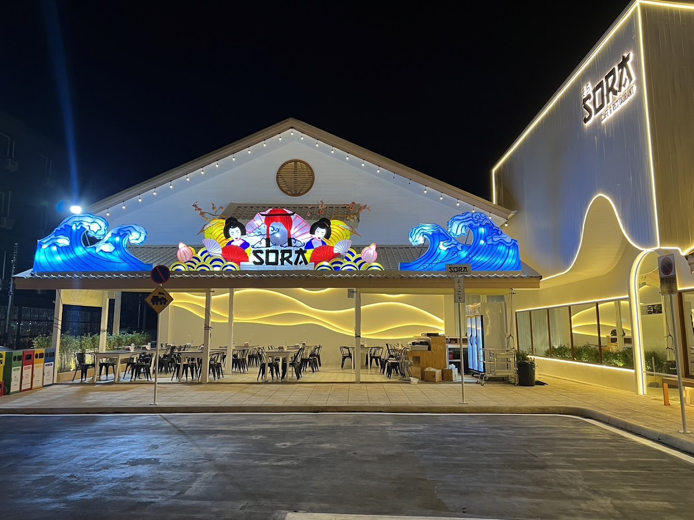
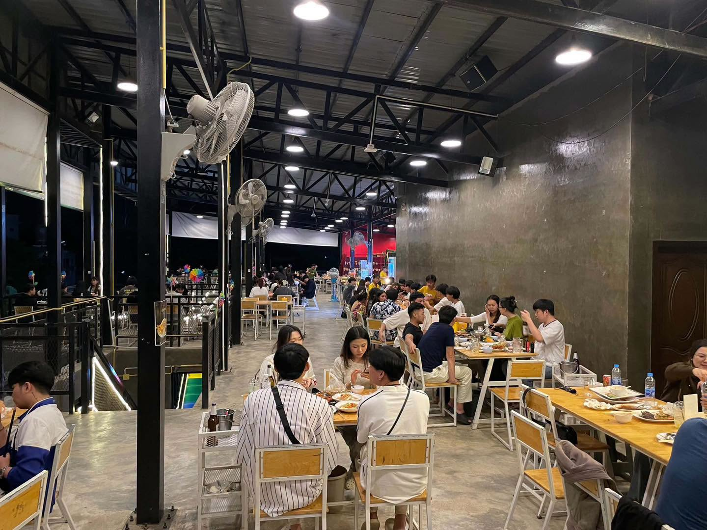
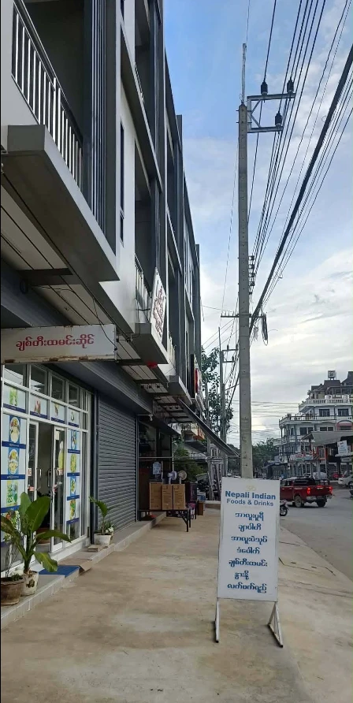
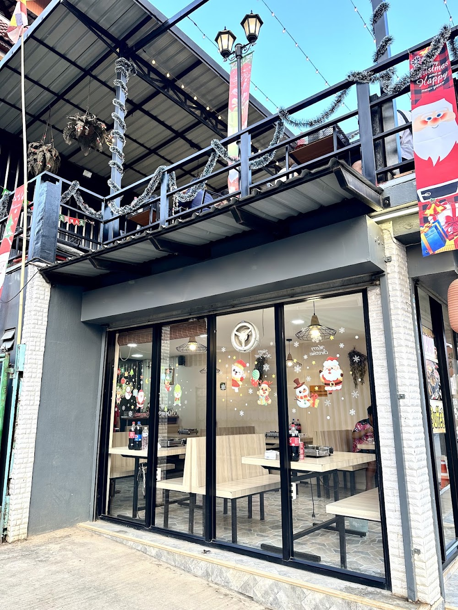
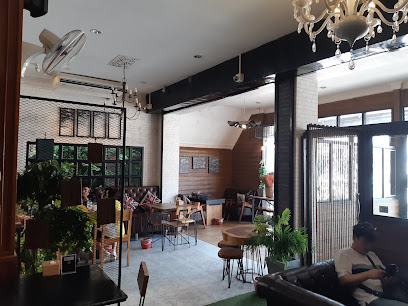
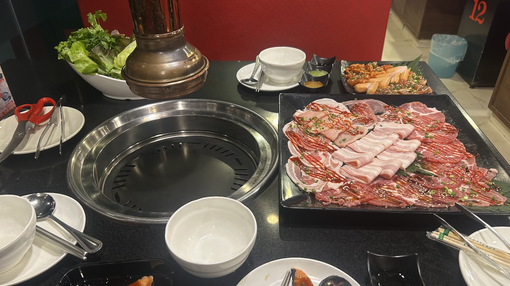
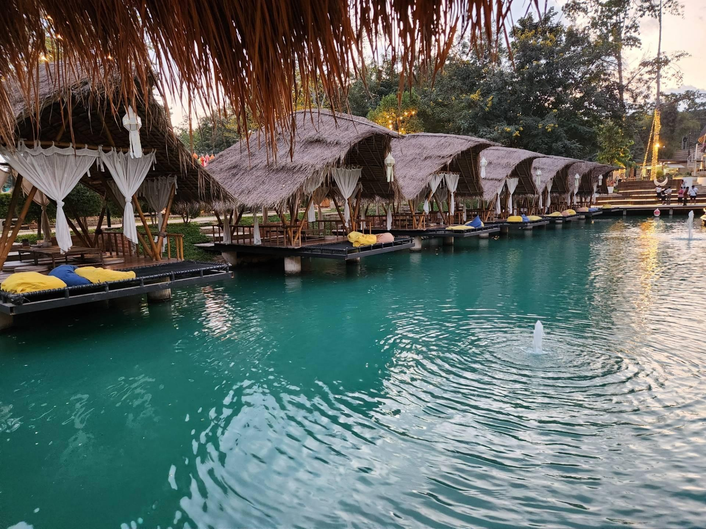

Restaurants In Tachileik
Discover the variety of restaurants in Tachileik, offering everything from traditional Myanmar and Shan dishes to Thai, Chinese, and international cuisine. Whether you're looking for a casual meal, local specialties, or a place to dine with friends and family, Tachileik has plenty of dining options to explore.

SORA Café & Restaurant
SORA Café & Restaurant is a popular dining spot in the San Sai area of Tachileik, offering a mix of Japanese and Thai cuisine alongside coffee, drinks, and desserts. With its pleasant atmosphere and cozy setting, it is a nice place to enjoy a relaxed meal, meet friends, or spend time over a cup of coffee.

Phingpha Café & Restaurant
Phingpha Café & Restaurant is a well-known dining spot in Tachileik, offering a combination of Thai cuisine and international dishes. Designed with a café-style atmosphere and garden-inspired surroundings, it provides a pleasant setting for enjoying a meal, having coffee, or spending time with friends and family.

TUNGKABUREE TACHILEIK
(ตุงคะบุรี ท่าขี้เหล็ก)
Tungkaburee Tachileik is a popular dining spot in Tachileik, known for its Chinese-style cuisine, barbecue, and wide selection of dishes. It offers a welcoming setting with outdoor seating, making it a pleasant place to enjoy a relaxed meal or gather with friends and family. With its lively atmosphere and variety of food options, it is a good choice for those looking to enjoy an evening out and share a meal together.

KSB Nepali Indian Foods And Drinks
KSB Nepali Indian Foods And Drinks is a local restaurant in Tachileik specializing in Nepali and Indian cuisine. It offers a variety of traditional South Asian dishes, including biryani, chapati, puri, and butter rice. With its convenient location along Bojoke Main Road, it is a nice place to enjoy a satisfying meal and explore different flavors.

You SHABU AND BBQ
You SHABU AND BBQ is a popular hot pot and barbecue restaurant in Tachileik, offering a cook-at-the-table dining experience. It provides a variety of ingredients for shabu-shabu and grilling, making it a great place to enjoy a relaxed meal with friends or family. With its lively atmosphere and group-friendly setting, it is a good choice for an enjoyable evening out.

Sistar's House
Sistar's House is a cozy café and restaurant in Tachileik, offering a variety of Thai dishes, coffee, cakes, and desserts. It provides a welcoming and comfortable setting where visitors can enjoy a casual meal, have a refreshing drink, or treat themselves to something sweet. With its relaxed atmosphere and selection of food and beverages, it is a pleasant spot for meeting friends, spending time with family, or simply taking a break during the day.

Fin Fin Korea BBA
Fin Fin Korea BBA is a Korean-style restaurant in Tachileik, offering a sit-down dining experience with a focus on Korean cuisine. It provides a comfortable setting for enjoying meals with friends, family, or colleagues. With its relaxed atmosphere and attentive service, it is a nice place for group gatherings and a casual dining experience.

VelaVaree @Maehoke,Tachileik
VelaVaree @Maehoke is a scenic restaurant in Tachileik, known for its beautiful garden surroundings, relaxing atmosphere, and variety of traditional Burmese and Shan dishes. Its menu includes local favorites such as Mohinga and Shan-style noodles, alongside Thai cuisine and other meals. With its decorative gardens, waterside seating, and picturesque photo spots, it is a lovely destination for enjoying local food while spending time with friends and family.